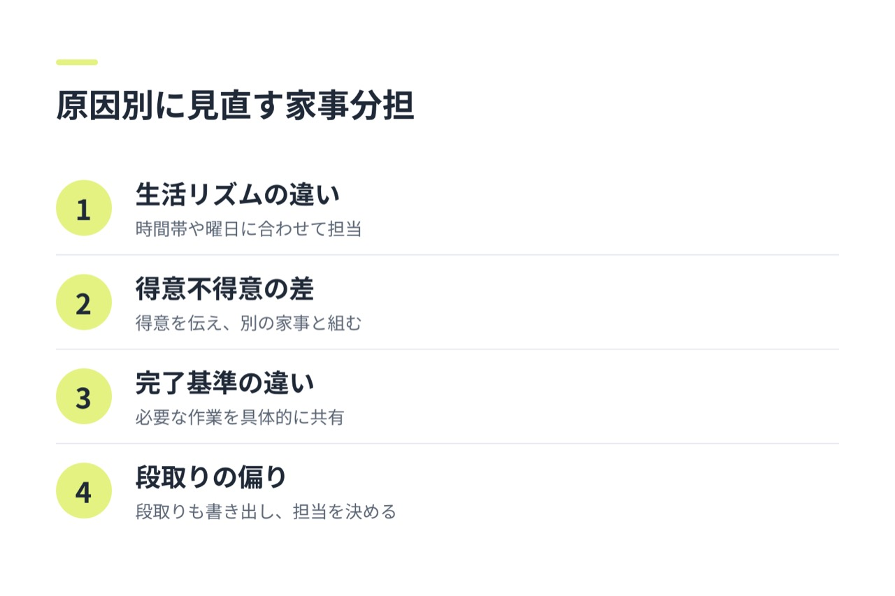
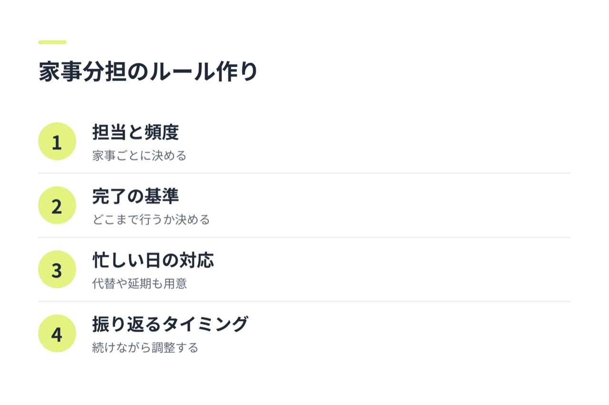

「共働きなのに、家事分担がおかしい気がする」と感じたら、次の項目をチェックしてみてください。
- 家事の実作業が、いつもどちらか一方に偏っている
- 家事を頼まれるまで、もう一方が動き出さないことが多い
- 買い物や予定の管理など、目に見えにくい作業を片方だけが担っている
- 家事の担当は決まっているのに、完了の基準が合わずやり直しが起きる
- 忙しいときの調整方法がなく、結局どちらかが無理をしている
- 家事の話をすると、責められたように感じたり、言い出しにくくなったりする
気になる項目があれば、家事の量だけでなく、段取りや負担感も含めて見直してみましょう。当てはまる数だけで公平・不公平を決めず、ふたりの生活に合う形を探していきましょう。
共働きで家事分担がおかしいと感じるサイン
家事の偏りは、掃除や料理の回数だけでは判断しきれません。たとえば、洗濯をする人と、洗剤の残量に気づいて補充する人が別なら、作業に加えて「気づく・考える・手配する」負担もあります。
次のような状態が続いていないか、ふたりの普段の過ごし方を振り返ってみてください。
- 同じ人が、家事の大半を実作業として担当している
- 食材や日用品の在庫確認、献立決め、予定管理が片方に集まっている
- 一方は「手伝う」立場で、もう一方が依頼や進捗確認をしている
- 仕事が忙しい時期でも担当が固定され、調整できない
- 家事の仕上がりに対する期待が異なり、片方がやり直している
夫ばかり、あるいは妻ばかりが担っている場合も、まずは責め合うのではなく、何がどれくらい発生しているかを共有することが出発点です。勤務時間や体調、家事にかけられる時間はそれぞれ違うため、見た目の回数だけで結論を出さないようにしましょう。
家事の偏りを見つけるために、ふたりの負担を整理する

「自分のほうが多くやっている」という感覚を話し合うには、家事を具体的な項目に分けると整理しやすくなります。まずは、料理、食器洗い、洗濯、掃除、ゴミ出し、買い物など、日々の作業を書き出します。
そのうえで、実作業と、予定管理や準備などの見えにくい負担を分けて記録します。担当者だけでなく、頻度や所要時間、気づいて対応する人も書いておくと、偏りの原因が見えやすくなります。
| 気になるサイン | 考えられる原因 | まず確認すること |
|---|---|---|
| 家事の実作業が一方に集中している | 担当が曖昧、または固定されている | 家事ごとの担当と頻度 |
| 片方が指示や確認を続けている | 予定管理や段取りが片方に集まっている | 誰が気づき、準備し、完了を確認しているか |
| 家事をしたのに不満が残る | 完了の基準がふたりで異なる | どこまでできたら完了か |
| 忙しいときに負担が急増する | 代替手段や優先順位が決まっていない | 忙しい日の最低限の家事と担当 |
記録は細かくしすぎなくて大丈夫です。数日から一週間ほど、ふたりで同じ項目を見ながら記録すると、記憶や印象だけに頼らず話し合えます。
家事分担が不公平になる原因と、原因別の見直し方


偏りが見つかったら、原因をひとつずつ確認します。原因と対処を対応させると、話し合いで決めることが明確になります。
勤務時間や生活リズムが異なる場合
帰宅時間や休日が違うと、同じ家事を同じ頻度で分けても、実際の負担感は変わることがあります。家事の数を同じにするより、各自が対応できる時間帯や曜日を確認し、無理なくできる作業を担当にしましょう。
たとえば、平日に時間を取りやすい人が一部の家事を担う代わりに、休日にできる作業をもう一方が受け持つ方法があります。どちらかが一方的に調整するのではなく、仕事の状況を共有して決めることが大切です。
得意不得意や作業にかかる時間が違う場合
同じ家事でも、慣れや得意不得意によってかかる時間は異なります。分担の前に、どの作業なら続けやすいかをお互いに伝え、担当を組み替えてみましょう。
得意な人に任せきりにするのではなく、もう一方が別の家事を受け持つなど、全体の負担が偏らない組み合わせを探します。新しく担当する作業は、最初に手順を一緒に確認すると行き違いを減らせます。
家事の完了基準が違う場合
「掃除した」の範囲や、洗濯物を片づけるタイミングなど、家事の基準は人によって異なります。基準が曖昧なままだと、担当した側は終えたつもりでも、もう一方には未完了に見えることがあります。
「床の目立つゴミを取ったら完了」「洗濯物は乾いたらたたんで収納する」など、必要な作業を具体的にすり合わせましょう。すべてを同じ基準にする必要はありません。ふたりが困らない水準を決めるのがポイントです。
段取りや名もない家事が片方に集まっている場合
買い物リストを作る、日用品の残量を確認する、家事の予定を考えるといった作業は、実作業に比べて見落とされやすいものです。こうした段取りも家事の一部として書き出し、誰が担当するか決めましょう。
「気づいた人がやる」だけにすると、気づく役割がいつも同じ人に偏ることがあります。担当を決めるか、在庫確認や買い物のタイミングを一緒に決めると、管理の負担を共有しやすくなります。
家事分担の話し合いで避けたい対応
家事の偏りを見直すとき、相手を責める言い方や、一般論を基準にする話し方は、状況の共有を難しくすることがあります。
- 「普通はこれくらいやる」と決めつける
- 「いつも何もしない」と、相手の行動をひとまとめにして責める
- 具体的な記録を見ず、記憶や不満だけで分担を決める
- 話し合いの場で、すべての家事を一度に解決しようとする
「私は買い物の予定を考えることも負担に感じている」「平日の洗濯をどちらが担当するか決めたい」のように、自分の負担と相談したい内容を具体的に伝えましょう。相手の事情も聞きながら、まずは調整したい家事をひとつ選ぶと、実行に移しやすくなります。
家事分担の偏りを繰り返さないためのルール作り


分担を決めるときは、担当者だけでなく、完了の基準や忙しいときの対応も一緒に決めておきます。
- 家事ごとの担当者と、おおよその頻度
- どこまでできたら完了か
- 担当者が忙しいときの代替方法や、後日に回す家事
- 分担を振り返るタイミング
「どちらかができないときは、もう一方が必ず代わる」と固定せず、家事を減らす、日をずらすなどの選択肢も用意しておくと、無理が続きにくくなります。ルールは最初から完璧にせず、続けながら調整しましょう。
アプリを使うかどうかにかかわらず、まずは次の週末に一緒に取り組む家事をひとつ決めるところから始められます。
話し合い後に家事分担が改善したか確認する
分担を変えたら、一定期間試したあとに、作業量と負担感の両方を振り返りましょう。たとえば、次の週末に短く話すと決めておけば、負担が大きくなる前に調整できます。
確認するのは、「決めた担当で実際に回ったか」「段取りが片方に残っていないか」「今の分担を続けられそうか」です。うまくいかなかったときは、誰かの努力不足と決めつけず、担当の量や完了基準、忙しい日のルールに原因がないかを見直します。
よくある質問
共働き夫婦の家事分担は、何対何なら公平ですか？
一律に公平といえる比率はありません。勤務時間や家事にかけられる時間、作業の負担感はふたりによって異なります。実作業だけでなく、段取りや管理も含め、双方が納得できる分担を話し合いましょう。
夫ばかり、または妻ばかりが家事をしているとき、どう切り出せばよいですか？
責める言葉ではなく、具体的な状況と相談したいことを伝えます。「最近、買い物や献立を考えることが私に偏っているように感じる。担当を一緒に整理したい」のように、事実と希望を分けると話し合いやすくなります。
家事の量は同じでも、片方だけが負担に感じるのはなぜですか？
作業にかかる時間や手間、家事を始めるまでの段取り、完了の基準が違う可能性があります。家事の数だけを比べず、それぞれが何を準備し、どこに負担を感じているかを確認してみましょう。
家事分担を話し合っても相手が変わらない場合はどうすればよいですか？
話し合いの内容が抽象的だったり、決めた担当や期限が曖昧だったりしないかを確認します。まずは家事をひとつに絞り、担当・頻度・完了の基準を具体的に決めて、短い期間試してみましょう。実行が難しい理由があれば、その理由に合わせてルールを調整します。
忙しい時期に家事分担が偏ったら、どのように調整すればよいですか？
一時的な偏りを責めるのではなく、何を優先し、何を減らすかをふたりで決めます。家事の一部を後日に回す、簡略化するなど、忙しい期間の対応を相談し、落ち着いた後に元の分担へ戻すかどうかも確認しましょう。
ふたりで確認する振り返りシート
話し合いを始める前に、次の項目をふたりで確認してみてください。
- 家事の実作業を項目ごとに書き出した
- 頻度や段取り、予定管理も負担として確認した
- どの家事がどちらに偏っているかを共有した
- 偏りの原因を、勤務時間・得意不得意・基準の違いなどから整理した
- 担当と完了の基準、忙しいときの代替方法を決めた
- 試した後に振り返るタイミングを決めた
未確認の項目があれば、まずひとつだけ話題にしてみましょう。ふたりの負担を見える形にし、続けられる分担を一緒に探すことが、見直しの第一歩です。